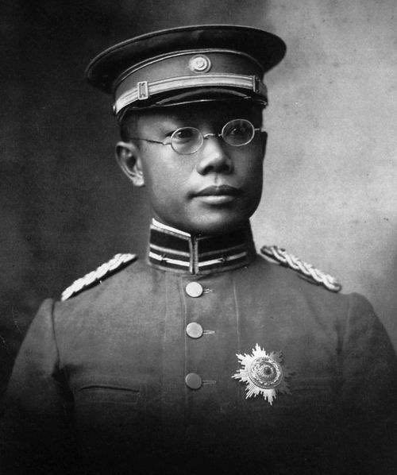
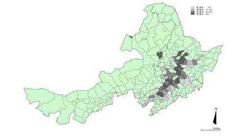
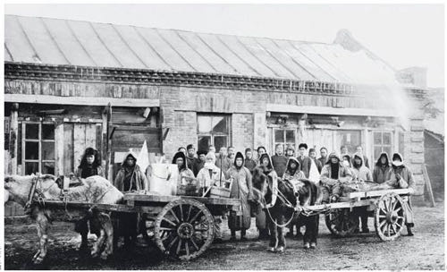
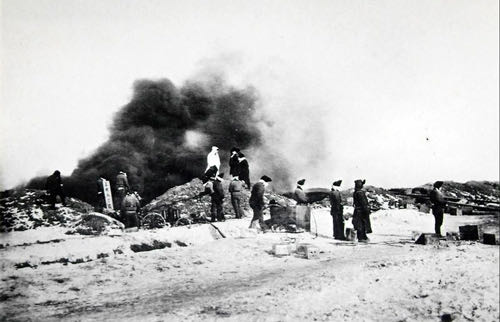
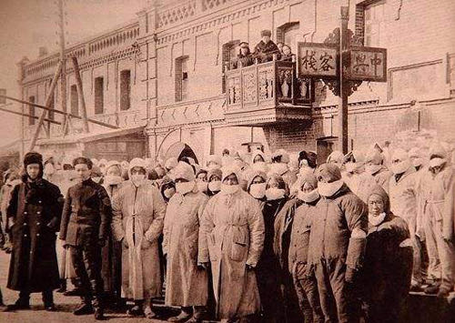

你好，欢迎来到《医学通识50讲》，我是薄世宁。
这节课要讲的大医生，曾经为近代中国医学的发展做过巨大贡献。
中华医学会、哈尔滨医科大学、解放军202医院、北京大学人民医院，这些医院或者机构的前身都和他有关。
他是1935年诺贝尔生理学或医学奖候选人之一，是第一个距离诺奖最近的华人。
我们戴的棉口罩，还有今天饭桌上的旋转餐台，都是这个医生发明的。
梁启超曾经说：
梁启超说的这个伍星联博士，就是伍连徳。伍连徳字星联。他的意思是说，当时能够站在世界舞台的中国医生，只有他一个。

不过这节课，我们不讲伍连德的学术贡献，也不说他和诺奖擦肩而过的遗憾，更不说他主持筹建的医院和组织。
我们说说100多年前，发生在中国东北大地上那场惨绝人寰的鼠疫，看看伍连徳是怎么用科学的公共卫生手段，战胜了大规模烈性传染病。
“肉身”抗击东北鼠疫
1910年，末代皇帝溥仪只有4岁，晚清政权摇摇欲坠，内忧外患。
10月25日这天，有两个皮毛贩子从俄国来到满洲里，投宿在一家叫做“魁生元”的小旅馆里。
当天晚上这俩人就病了。发高烧、剧烈地咳嗽、大口大口地咳血。没两天人就死了，身上布满了淤血的斑。
又过了两天，和他俩同住的另外两个旅客也病了。旅店老板见到人的时候，人已经死去了，浑身青紫，地面上有大量的血痰。
几天后，千里之外的哈尔滨就发现了大量症状一模一样的病人。这是一场触之即死的烈性瘟疫。
但是，这种情况并没有引起政府关注。
不到两个月，这场瘟疫迅速沿着中东铁路，经过海拉尔、齐齐哈尔再到大庆，再到哈尔滨，再到长春，再到奉天（今天的沈阳），然后奔着北京如火燎原般地迅速蔓延开来。

这个时候，再腐败无能的清政府也必须倾全国之力，遏制瘟疫。
从英国剑桥大学毕业，曾经在西方做过传染病研究的伍连徳医生临危受命。清政府任命伍连德为东三省防疫全权总医官。
到了哈尔滨的第三天，伍连徳在地下室秘密解剖因为瘟疫死亡的尸体。显微镜下的发现让他大惊失色。
他清楚地看到了一种椭圆形的细菌，这种细菌就是鼠疫杆菌。
鼠疫也被称为黑死病，我在前面的课程里说过，14世纪欧洲爆发鼠疫，三年死亡2500万人。这是人类历史上最烈性的瘟疫之一。
但是伍连徳想不透，鼠疫主要通过老鼠传染给人。12月份的东北大地已经天寒地冻了，老鼠根本就很少活动，怎么可能疫情传播这么快？会不会是一种新的鼠疫类型呢？
伍连徳想到这里，冷汗瞬间就滴了下来。
如果是人和人之间传播，那么就太可怕了，难怪传播速度如此之快。在东北，一到冬天家家户户都是门窗紧闭。只要是家里有人感染了这次瘟疫，那么全家都在劫难逃。
伍连徳认为，这是一种新型鼠疫，在人和人之间经过呼吸道传播。他给这个病起了一个名字——肺鼠疫。中国哈尔滨面临灭城之灾。
在人类历史上，很多瘟疫早期根本没药可治。
比如天花、霍乱；比如2003年中国非典病毒，近些年非洲的埃博拉病毒；再比如1910年的哈尔滨鼠疫。
鼠疫的特效药是在33年之后的1943年才有的，叫做链霉素（streptomycin）。也就是说，伍连徳当时控制鼠疫根本没有药。
大规模传染病的控制原则
伍连徳用了什么方法呢？
这就是这节课要说的大规模传染病的控制原则：管理传染源，切断传播途径，保护易感人群。
肺鼠疫的传染源，就是感染了鼠疫的病人或者尸体。传播途径就是呼吸道传播，通过空气、飞沫传播。
什么是肺鼠疫的易感人群呢？在当时没有疫苗，所以无论老人、儿童还是成年人，只要是接触到病人，那就都容易被感染。所以，当时所有的中国人都是易感人群。
当时，无论是百姓还是行政长官，对于传染病控制几乎一无所知。
老百姓只知道发生了瘟疫，所以就是逃离。家里有了病人，却隐瞒不报，或者到了晚上偷偷地把病危的病人扔在街上。所以，很多尸体被发现的时候，双手蜷在胸前，保持着一个取暖的姿势。
当时的防疫之难可想而知。
伍连徳让士兵挨家挨户搜查，一旦发现病人，立刻送到防疫医院，房屋用生硫磺和石炭酸消毒。

他克服重重阻力焚烧尸体。先是用炸药爆破、挖坑。然后按照每百个尸体10加仑的标准浇上煤油，对尸体进行焚烧、掩埋。这就是管理传染源。

怎么切断传播途径呢？
既然肺鼠疫是人和人之间呼吸道传播，所以必须减少人员流动并且采取隔离。
他从长春抽调1160名士兵进行交通管制，任何人都不可能穿越封锁线。日本控制的南满铁路，俄国控制的东清铁路相继停驶。伍连徳在山海关设立检疫所，凡是经此南下的旅客都要停留5天，观察有没有得病。
在哈尔滨，伍连徳设计了一种简易的双层纱布囊口罩，在两层纱布中间放一块吸水药棉，戴上它就可以阻断呼吸道传播。关键是这种口罩成本极低，易推行。

同时，他又按照病情分为疫症院、轻病院、疑似病院几种。为不同病情的病人进行治疗的同时，还防止了交叉感染。
管理了传染源，切断了传播途径，自然也就保护了易感人群。在这种科学、规范的防控措施下，在短短不到4个月的时间，死亡人数就下降到0。
1911年3月1日，当鼠疫死亡人数零报告的时候，防疫总部内一片沸腾。这是人类历史上第一次依靠科学手段，在人口密集的大城市成功控制传染病的典范。
这次鼠疫牺牲了6万人的生命，但是在当时的中国，这已经是个奇迹了。要知道欧洲三年鼠疫，牺牲了2500万人。
一个月后，“万国鼠疫研究会”在奉天（沈阳）召开，11个国家的代表出席大会，伍连徳任大会主席。这是中国历史上在本土举办的第一次真正意义上的世界学术会议。伍连徳以发现肺鼠疫，战胜鼠疫，扬名天下。
1937年，日本侵华战争爆发，伍连徳在上海的家被炸毁，他回到马来西亚。1960年1月21日，伍连徳因为心脏病去世。
伍连徳用肉身之躯，阻遏了中国鼠疫爆发，他是中国检疫防疫的先驱者之一。
接下来，我们通过这个案例，分析一下对于不明原因、烈性、极速扩散的传染病的群体防控特点。
防控不以明确传染源为前提
治疗普通疾病，首先要了解准确的病因、病原体、发病机制。机制研究得越透彻，治疗效果也就越好。
但是，突如其来的烈性传染病不同。在烈性传染病面前，如果能迅速找到病原体，无疑对于整个疫情的控制都是非常有利的。伍连徳第一时间找到了鼠疫杆菌，这也是不幸中的万幸。
但是，如果在瘟疫早期病原体不明，或者遇到一种前所未有的传染病怎么办？
比如中国2003年的非典。在早期我们不知道这种病的病原体。到底是细菌还是病毒？如果是病毒，是什么类型的病毒？
在病原体不明的情况下怎么办？
不能等。
防控的第一个层面：对于大规模原因不明的传染病防控，不能以了解病原体为必须前提。应该迅速判断疾病的性质和导致的危害。
搞清楚病原体可能对什么敏感，对什么不敏感。迅速判断传播途径，是飞沫传播，还是经过水系或者消化道传染。
了解传播途径之后，才可能制定针对性的措施。如果是飞沫、呼吸道传播，那么就应该像伍连德的案例一样，按照呼吸道传染病进行管理。
如果是水系污染导致的消化道传染病，比如霍乱，那么防控重点就应该是处理饮用水、垃圾、粪便，管理食品与河道排放等等。
传播途径不同，群体防控的重点也不同。
一旦明确传播途径，就到了防控的第二个层面：迅速进行科学的防控措施，为治疗争取时间。群体利益为主，群体利益和个体利益兼顾。
病原体不明的情况下，或者在伍连德的案例中，即便知道了是鼠疫，但是当时没有特效的药物怎么办？
不能等。
按照群体防控的措施：管理传染源，切断传播途径，保护易感人群。
将不同病情的病人，也就是可疑感染者、感染者和严重病情的病人，进行隔离分类治疗。这既避免了疫情扩大，保护了其他人群，也能对感染者进行悉心治疗，同时体现出医学在重大疫情面前的关爱和救护。
伍连徳医生当时采用的防控措施，在今天依然适用于各种烈性传染病的控制，中国公共卫生管理部门已经具备了丰富经验。
近年来，非洲埃博拉疫情爆发，中国政府派遣公共卫生管理人员和医生远赴非洲协助瘟疫控制。我们科就有一位医生被派遣去了非洲，圆满地完成了任务。
伍连徳是我最敬重的医生，他是马来西亚华侨，但是他直到离世都在说，“我是个中国人”。
他说过：
下节预告
女医生如何成为医学行业重要的组成部分？下节课，我们介绍一位中国女医生的代表——林巧稚。